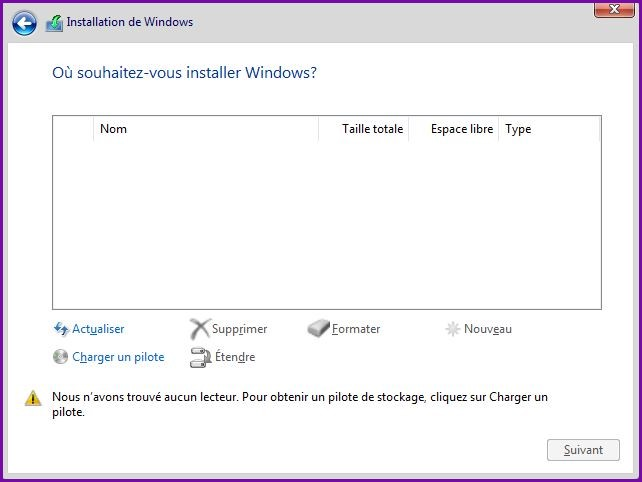
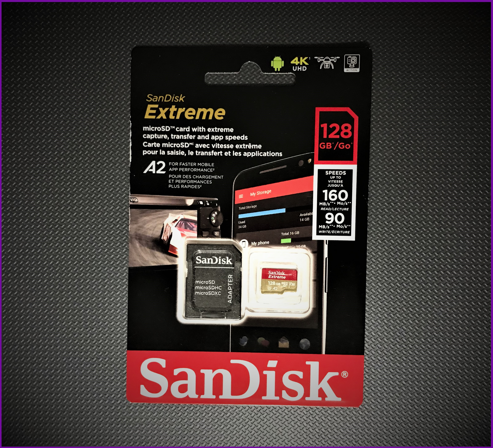

Introduction et prérequis
Lorsque l'on effectue une installation habituelle de Windows, c'est un disque interne branché SATA (ou autre type de contrôlleur) que l'on va choisir pour accueillir le nouveau système. Dans la dernière étape, l'assistant d'installation de Windows fait un inventaire des disques compatibles puis propose de choisir sur lequel installer le système.
On sélectionne alors le disque désiré, puis on clique sur le bouton suivant. L'assistant préparera des partitions additionnelles (EFI et récupération Windows) et lancera ensuite l'installation de Windows.
Le problème
L'assistant d'installation de Windows ne propose pas les périphériques de stockage amovibles lors de l'étape de sélection du disque.
Ceci fait en sorte qu'il n'est pas possible de choisir une clé USB, un disque dur externe, une carte mémoire ou autre périphériques de ce type comme destination pour installer le système lorsque l'on utilise directement le média d'installation. Il est à noter que Mac OS ainsi que la plupart des distributions Linux permettent de choisir un disque amovible en tant que destination pour le root filesystem.
Depuis Windows 7, Microsoft propose un moyen de pouvoir parvenir à cette fin. Cependant, cette fonctionalité nommée Windows to Go ou WTG est destiné aux entreprises et non à l'Utilisateur général. C'est probablement pour cela que l'assistant d'installation est limité sur ce point.
Pour y parvenir, il y a deux options.
- Utiliser un logiciel qui fait le tout de façon automatisée tel que AOMEI Partition Assistant ou encore, Rufus
- Utiliser ses habiletés en cmd Windows et effectuer le tout manuellement.
Cette dernière option sera celle couverte par ce guide. Nous allons effectuer une installation de Windows to Go sur une carte microSD SanDisk Extreme de 128 Go (160r/90w) classe 10 + U3 + V30 comme celle-ci.
La procédure fonctionne également avec les clés USB, disques externes ainsi que d'autre carte mémoires. Notez que plus la vitesse du périphérique est rapide, plus le système le sera. Un périphérique plus lent résultera en une installation plus ou moins utilisable, dépendant de la vitesse de lecture et d'écriture.
Concernant les cartes mémoire, voici mes recommandations.
- Type : Au minimum (80r/80w) classe 10 + U1
- Capacité de stockage : Au minimum 32 Go
Ci-haut, une carte mémoire EMTEC de 32 Go (85r/85w) classe 10 + U1 qui devrait être suffisante au minimum pour utiliser un système Windows to Go.